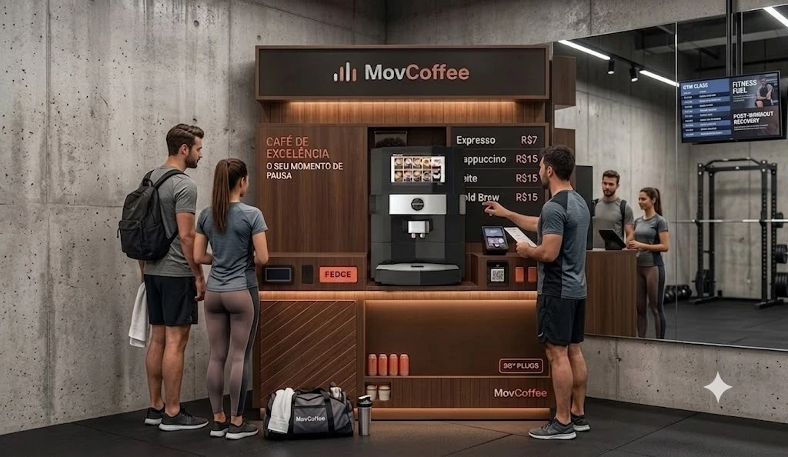
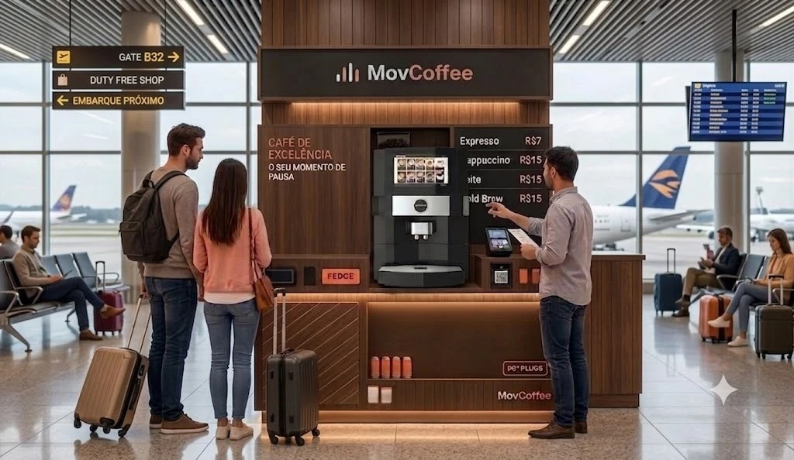
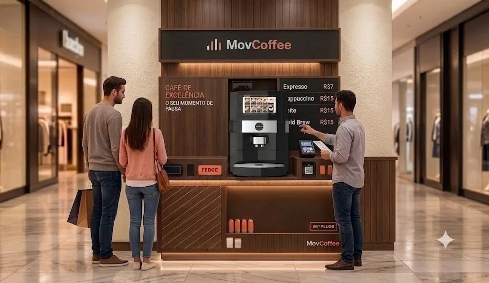

Mov Coffee - Quiosque automatizado
O café é o produto.
A liberdade é o negócio.
Um quiosque de autoatendimento que cabe num corredor, opera com uma pessoa por turno e coloca você no comando do próprio tempo.
- 1 operador por turno
- ~6 m² de ponto
- 100% autoatendimento
O modelo
Por que um quiosque, e não uma loja?
O formato quiosque corta os maiores custos e riscos de uma cafeteria tradicional — sem abrir mão da qualidade da bebida.
Menor investimento
Sem obra pesada, salão ou cozinha. Uma estrutura compacta pré-fabricada custa uma fração de uma loja de rua.
Equipe mínima
Uma pessoa por turno dá conta: a máquina prepara, o totem cobra. Sem barista, sem brigada de cozinha.
Instalação rápida
Módulo pré-fabricado montado no ponto em dias, não meses. Menos tempo parado, retorno começa antes.
Baixo estoque perecível
Insumos de longa validade e poucos SKUs. Quase sem desperdício e sem a dor de cabeça do alimento fresco.
Operação
Como funciona no dia a dia
Autoatendimento de ponta a ponta — o operador cuida da experiência, não da fila.
-
Escolhe no Display da Máquina o Café
Cardápio digital com expresso, cappuccino, latte e cold brew. Sem fila no balcão.
-
Paga por aproximação ou Pix
Pagamento 100% digital integrado ao totem. Sem caixa, sem dinheiro em espécie.
-
Retira o café pronto
Café moído na hora por máquina profissional automatizada, pronto em menos de um minuto.
-
Operador reabastece e orienta
Uma pessoa por turno repõe insumos, higieniza a máquina e ajuda quem precisar.
Investimento
Os números do modelo
⚠️ Valor de referência, sujeito a confirmação.
Investimento do quiosque completo
R$ 72.000
Máquina, mobiliário e estoque do 1º mês
*Valores de frete não inclusos.
Quer ver o retorno na sua realidade? Simule payback e lucro mensal ajustando cafés/dia, ticket e ocupação.
Vantagens
Feito para operar leve
O Mov Coffee ataca as três maiores dores de quem empreende em alimentação: gente, desperdício e complexidade.
-
Baixo risco vs. loja tradicional Sem obra pesada, sem cozinha, sem cardápio complexo. Se o ponto não performar, o quiosque pode ser realocado.
-
Suporte técnico da máquina Manutenção preventiva e assistência da fabricante coordenadas pela franqueadora — você nunca fica na mão.
-
Baixa complexidade de gestão Poucos insumos, precificação padronizada e relatórios de venda automáticos direto do totem.
-
Padrão de qualidade centralizado Blend exclusivo e calibragem remota das receitas: o café sai igual em qualquer unidade da rede.
Localização
Onde um Mov Coffee funciona
Qualquer lugar com fluxo alto e gente de passagem querendo uma pausa rápida.
Modelos de quiosque
Nosso Modelo de Quiosque Mov Coffee
Imagens ilustrativas do nosso modelo de quiosque em operação em diferentes ambientes.

Foto do modelo
Foto do modelo
Foto do modeloPontos-alvo da expansão
Dúvidas frequentes
Perguntas que todo candidato faz
Qual é o investimento total para abrir um Mov Coffee?
O investimento do quiosque completo é de R$ 72.000 (valor de referência, sujeito a confirmação) e inclui a máquina, o mobiliário e o estoque do 1º mês. Os valores de frete não estão inclusos e não há capital de giro incluído.
Quanto tempo leva para instalar o quiosque?
Com o contrato de locação do ponto assinado, a instalação do módulo leva de 30 a 45 dias em média — o quiosque chega pré-fabricado e é montado no local.
E se a máquina quebrar?
A máquina tem contrato de assistência técnica com atendimento prioritário, coordenado pela franqueadora. A manutenção preventiva é agendada e as receitas são monitoradas remotamente.
Terei exclusividade territorial?
Sim, por ponto: cada unidade tem exclusividade no empreendimento em que está instalada. As regras de raio e expansão constam do contrato.
Quanto preciso de capital de giro?
Recomendamos reserva equivalente a 3 meses de custos fixos (valor detalhado no contrato), cobrindo aluguel do ponto, insumos e o salário do operador até a maturação da unidade.
Preciso ter experiência com café ou varejo?
Não. O treinamento inicial cobre operação da máquina, gestão de insumos e atendimento. A máquina automatizada garante o padrão da bebida sem barista.
Como funciona o treinamento?
Treinamento presencial de 1 semana na unidade-modelo (licenciado + operador), seguido de acompanhamento remoto nos primeiros 90 dias de operação.
Posso ter mais de uma unidade?
Sim — o modelo enxuto favorece multioperação: um mesmo licenciado pode administrar quiosques em pontos diferentes com uma estrutura leve de supervisão.
Cadastro
Quero ser licenciado Mov Coffee
Preencha seus dados e nossa equipe de expansão entrará em contato em até 2 dias úteis.
Cadastro recebido!
Obrigado pelo interesse na Mov Coffee. Nossa equipe de expansão entrará em contato em até 2 dias úteis.